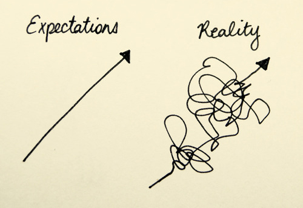
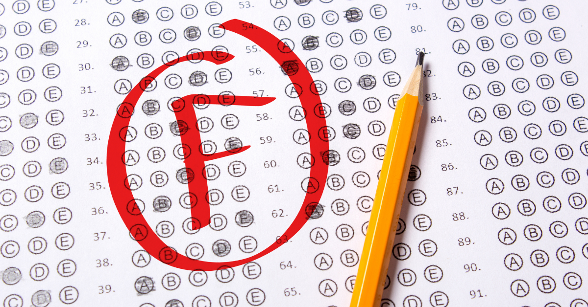

1. False expectations
We’ve all been a little bit raised with this idea that having a degree brings you into the world of work in a guaranteed way, without a degree you will never be able to find a job of any respect. Perhaps this could have been true once, at least the first part of the idea. Now just looking around you a little is enough to realize that this idea is full of holes, plus at work no one cares about what path you have taken in school and possibly university, what matters are your skills and unfortunately the university (let alone school) doesn’t really teach you the skills you need to get into some place you want, but what happens is more likely this:
- You "study" to pass exams and then forget everything;
- In most cases the practice is absent or almost;
- You are not really prepared for the world because the system has remained obsolete while the world out there goes on every day.
2. Outdated and ineffective learning system

As mentioned above, the system of learning (at least in Italy) in schools has lagged behind. It is all based on memory and those teachers who say the contrary condemn those who store information where there is little or nothing to understand by saying that memory is completely useless and you just have to understand. Schools do not provide the tools to help students learn better, because most teachers don’t even have the slightest idea of how learning actually works. Those few teachers who see through this mountain of misinformation and want to fix it are often misunderstood and condemned because they have different methods of operation.
Grades
Grades are designed to give the student feedback on their performance, so they can see what they did well and what they can improve. The problem is how they were handled, because grades aren't really used as feedback but they're commonly translated into a number (or a letter). Got it? A student works his butt off to study and get ready for a question, then gets a number that is not even accompanied by constructive criticism to encourage the student to improve. As if that was not enough, grades are not even given in the most factual way possible. Considering they are assigned by people, as such they are subject to bias, among these the ones which intervene most in this field we find those of sympathy and antipathy. To give a clear example when I went to high school in French I was really bad and I could barely pick out a word, despite this I found 10 in the report card. Where do I want to go with this? This not only means that the grade is most often not based on performance itself but also that a single teacher has the potential to ruin students' lives by abusing his or her freedom of action, not that much is left today.
3. The school environment is suffocating
When a student finishes their studies they're happy, but what is one of the things that you hear them say most often? Is it "How nice, now that I have finished school I can use what I have learned to find my place in the world"? No? Then maybe it’s "Now that it’s over I can’t wait to continue my studies at university". The answer is neither of them, when a student finishes school and knows that they will no longer have to deal with it, they almost always feel happy because they believe that they must not open a book in their life, because this is what school does to you, it makes you associate learning something new with spitting blood on books when learning is quite different. See? This is also the reason why fewer and fewer people decide to go to university.
4. Bulliyng almost always prevails (and gets ignored)
Personally I haven't been bullied much when I was in school but when happened I felt powerless. I've already seen what happens to who tries to stand against bullying and things ended good once in a blue moon. Teachers don't care about it and the worst part is that if you're being bullied and you fairly fight back instead of getting pummelled, then YOU are the whom gets punished, not the bully. Now I know that more often than not bullies don't have an easy life and their methods are a way to express their weakness but I don't think that's a valid excuse to walk on others and make their life a living hell. The most common advices you hear on how to deal with bullying are something like:
- "Ignore them"
- "Just laugh when they provoke you"
- "They're just jealous"
- "Be kind with them, don't push yourself to their same level"